- Node
- Basic
- Translation
- Rotation
- Scale
- Size, Size2
- Color, Color2
- Blend
- RenderState
- Generate
- Texture
- Particle
- Vertex Colors
- Gravity
- Wind
- Radial
Node
ノードに関係するパラメータ。
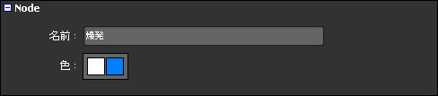
| 名前 | ノードの名前 | |
|---|---|---|
| 色 | ノードの色。左は前景色、右は背景色 |
Basic
ノードの基本情報。全てのノード共通。
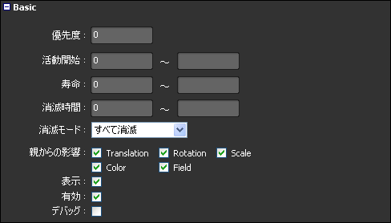
| 優先度 | ノードの優先順位。優先度が高いほど先に実行される。 | 負数も設定できる |
|---|---|---|
| 活動開始 | 活動を開始するフレーム数 | 0 ～ |
| 寿命 | 寿命。フレーム数。0 は寿命がないということ。 | 0 ～ |
| 消滅時間 | 消滅時間。寿命後、消滅時間でフェードアウトする。設定する場合は寿命を１以上にすること。 | 0 ～ |
| 消滅モード | 消滅に関係する振る舞い。 すべて消滅: 消滅するときに全ての子を消滅させる。 子の終了を待つ:全ての子が消滅した後、このノードを消滅させる。 | |
| 親からの影響 | 親からの影響。 Translation:位置 Rotation:回転 Scale:スケール Color:カラー Field:フィールド | |
| 表示 | シーンに表示するかどうか | |
| 有効 | ノードを有効にするかどうか | |
| デバッグ | デバッグ用 |
Translation
位置。
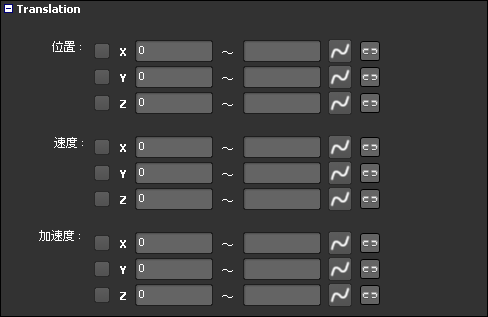
| 位置 | 位置 | |
|---|---|---|
| 速度 | 速度(秒速) | |
| 加速度 | 加速度(秒速) |
Rotation
回転。
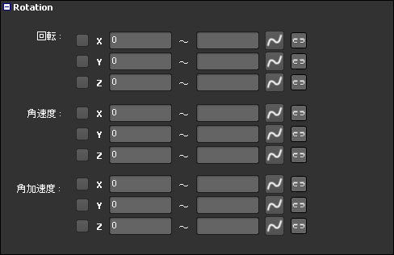
| 回転 | 角度 | -360 ～ 360 |
|---|---|---|
| 角速度 | 角速度(秒速) | |
| 角加速度 | 角加速度(秒速) |
Scale
スケール。
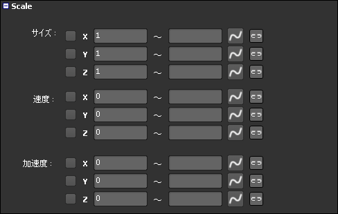
| サイズ | スケール | |
|---|---|---|
| 速度 | 速度(秒速) | |
| 加速度 | 加速度(秒速) |
Size, Size2
サイズ。
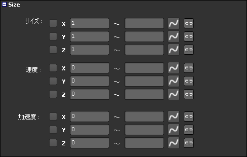
| サイズ | サイズ | |
|---|---|---|
| 速度 | 速度(秒速) | |
| 加速度 | 加速度(秒速) |
Color, Color2
カラー。
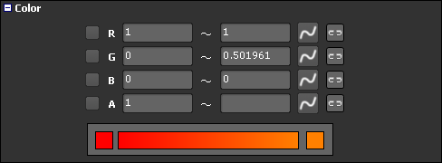
| R | 赤成分 | 0.0 ～ 1.0 |
|---|---|---|
| G | 緑成分 | 0.0 ～ 1.0 |
| B | 青成分 | 0.0 ～ 1.0 |
| A | α成分 | 0.0 ～ 1.0 |
Blend
アルファブレンド設定。

| 有効 | 有効にするかどうか | |
|---|---|---|
| モード | Add:加算 Subtract:減算 Modulate:乗算 Transparent:透明 |
RenderState
レンダーステート設定。
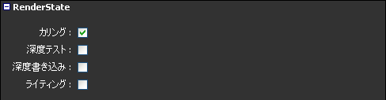
| カリング | カリングするかどうか。Billboard ならする、BillboardY, Polygon ならしないが基本。 | |
|---|---|---|
| 深度テスト | 深度テスト | |
| 深度書き込み | 深度書き込み | |
| ライティング | ライティング |
Generate
生成に関する設定。
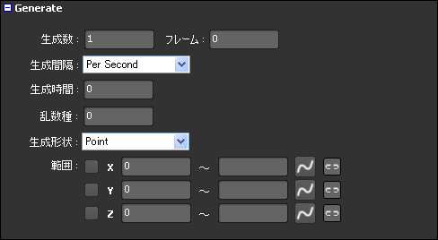
| 生成数 | 生成する数 | 0 ～ |
|---|---|---|
| フレーム | フレーム | 0 ～ |
| 生成間隔 | Per Second:生成数は１秒間に生成する数。フレームは使用しない。 Total:生成数は一度に生成する数。フレームは使用しない。 Per Frame:フレーム時間で生成数分、作成する。 Per Frame Interval:毎フレームおきに、生成数分、作成する。 |
|
| 生成時間 | 生成する時間。フレーム単位。 | |
| 乱数種 | 乱数の種 | 0 ～ |
| 生成形状 | Point:位置 Box:箱 Sphere:球 Plane:平面（機能しない） |
|
| 範囲 | Point:オフセット Box:辺の長さ Sphere:球の半径 Plane: |
Texture
テクスチャに関する設定。
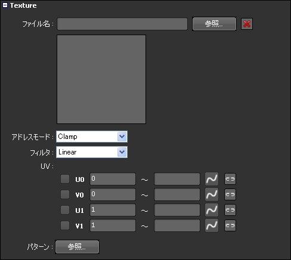
| ファイル名 | テクスチャファイル名 | |
|---|---|---|
| アドレスモード | Wrap:ラップモード Clamp:クランプモード Mirror:ミラーモード |
|
| フィルタ | None:フィルタなし Point:ポイントフィルタ Linear:バイリニアフィルタ Anisotropic:異方性フィルタ |
|
| UV | UV(左上が 0,0 、右下が 1,1) | |
| パターン | テクスチャパターン |
テクスチャファイルの設定
テクスチャライブラリやエクスプローラなどの外部アプリケーションからドラッグ＆ドロップすることができます。
ドロップできる場所は下図のようになっています。
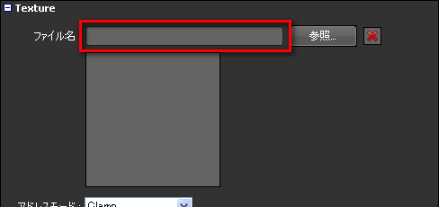
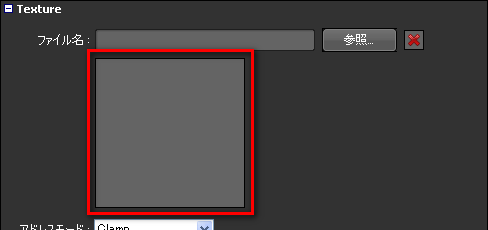
テクスチャのプレビュー
下図の場所にテクスチャのプレビューが表示されます。
Particle
パーティクルに関する設定。
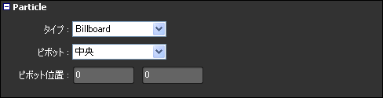
| タイプ | プリミティブタイプ。 Billboard:ビルボード。常にカメラを向いている。Ｚ軸回転だけ有効。 BillboardY:ビルボード。Ｙ軸固定。Ｙ軸、Ｚ軸回転が有効。 Polygon:ポリゴン。XYZ軸回転できる。 |
|
|---|---|---|
| ピボット | スケール、回転のピボット点の位置。 | |
| ピボット位置 | 左上からのピボット位置。ピボットが指定のときだけ有効。 |
Vertex Colors
頂点カラーに関する設定。
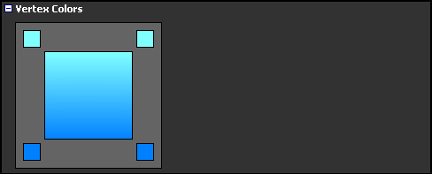
Gravity
重力に関する設定。
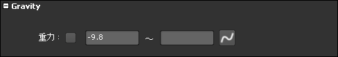
| 重力 | 重力加速度 |
|---|
Wind
風力に関する設定。
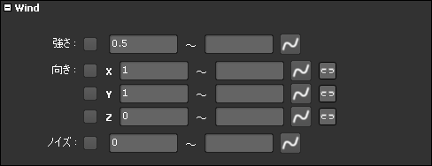
| 強さ | 風の強さ | |
|---|---|---|
| 向き | 風の向き | |
| ノイズ | 風の向きに影響するノイズ |
Radial
放射状の力に関する設定。
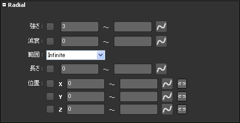
| 強さ | 力の強さ。値が正なら中心から放射状に力を作用する。値が負なら中心に向かって引き寄せる。 | |
|---|---|---|
| 減衰 | 力の減衰。作用する力 = 強さ × 1.0f / (減衰×中心からの距離) | |
| 範囲 | 力が影響する範囲。 Infinite:すべてのパーティクルが影響する。 Range:長さに設定した範囲内にだけ影響する | |
| 長さ | 力が影響する球の半径 | |
| 位置 | 力の中心点 |